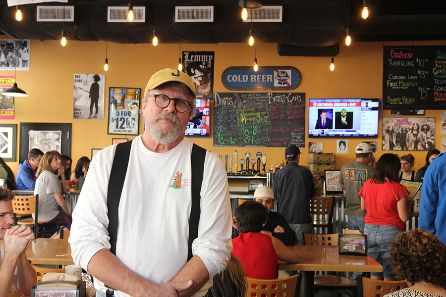
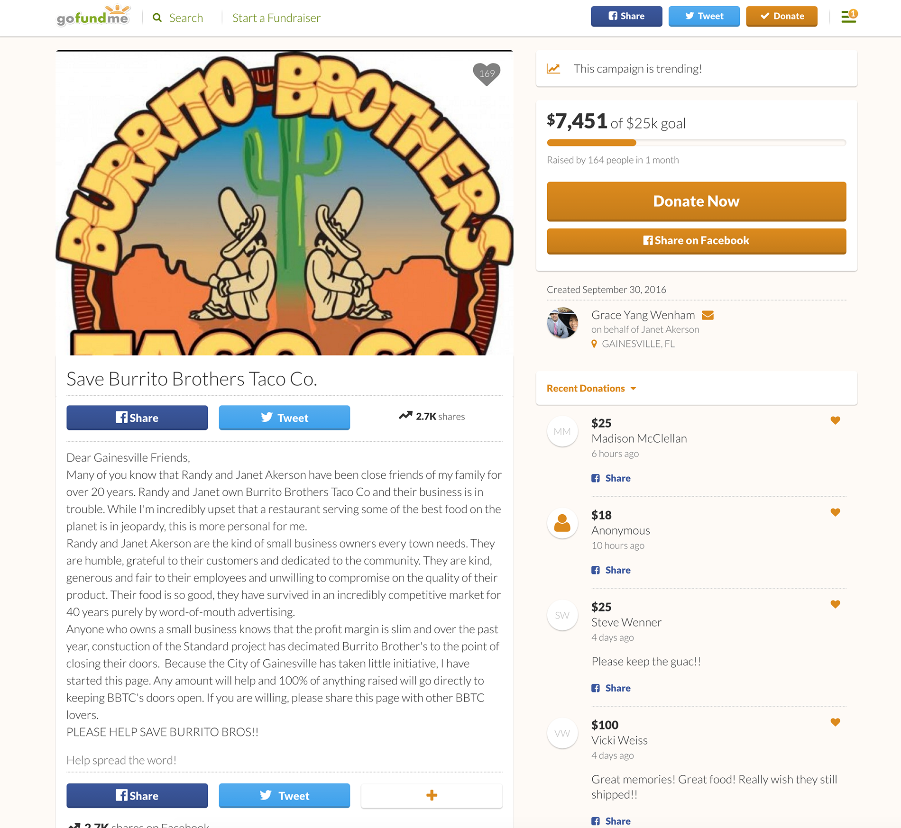
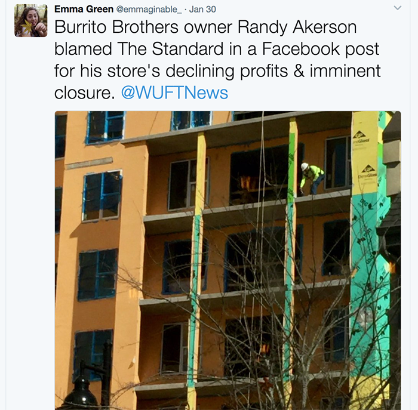
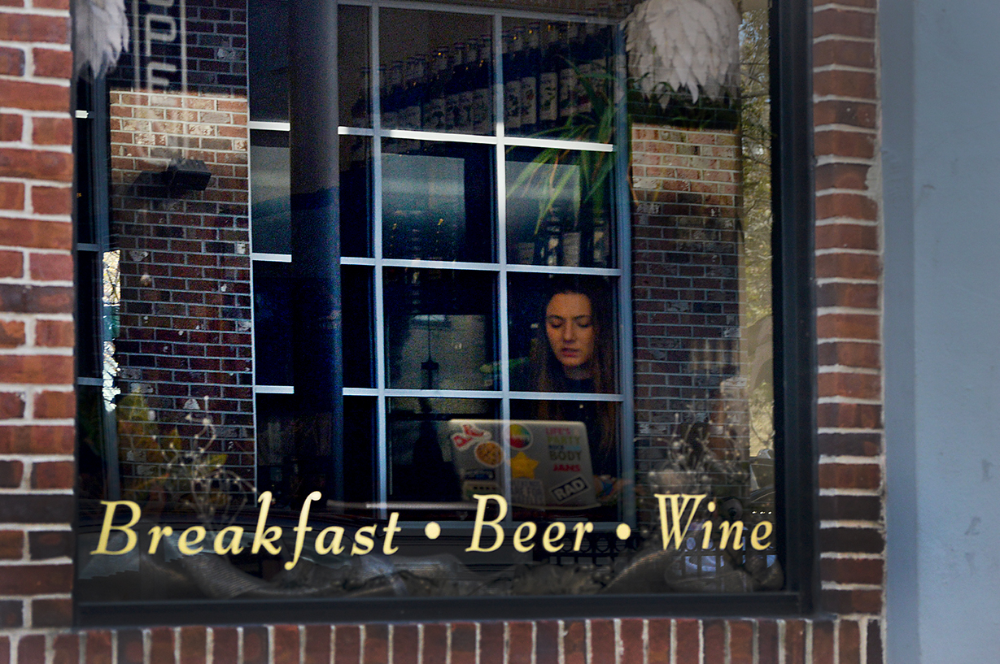
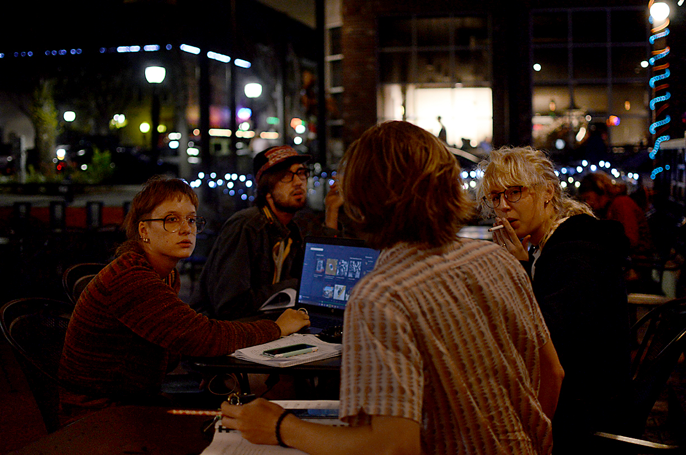
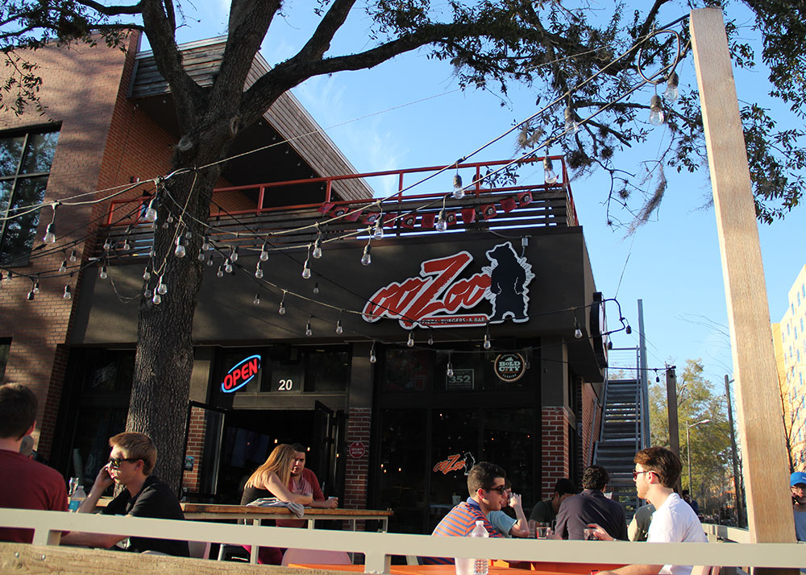
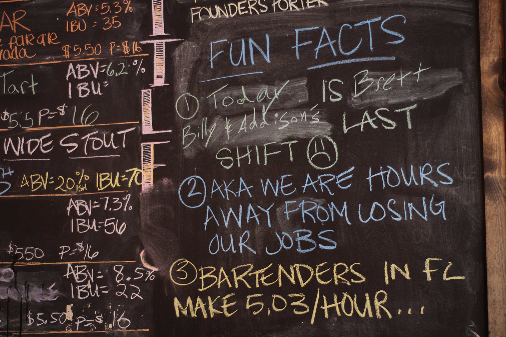
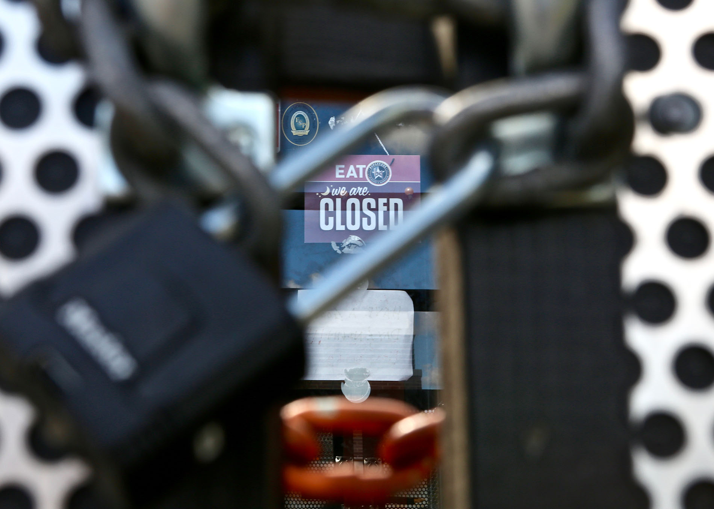
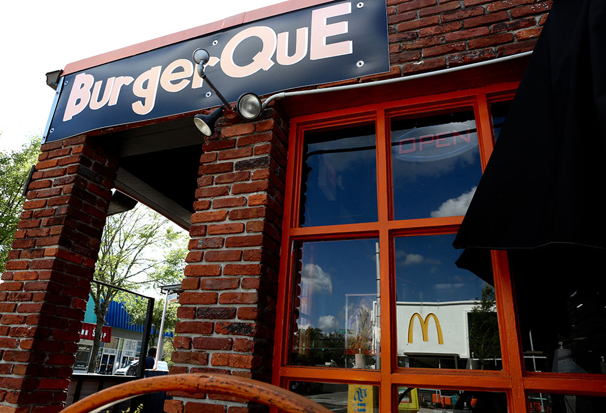

The following local businesses have been impacted by development.
Click on each image to learn more.
The JAM
The JAM started from a modest point.
The idea for the venue grew from the simple fact that Veronica Arenas, a friend of Blake Briand’s, had a few months left on her lease in a building that was meant to be a coffee shop. What started as jam sessions a few nights a week grew into large-scale events with full production. These concerts, charity events and even one wedding hosted hundreds on certain nights.
This side project created by Briand, Veronica Arenas and her brother Eduardo Arenas blossomed from a place to hangout into what was truly a second home for many UF students and Gainesville residents. On any given night patrons of The JAM could see explosively talented individuals in an intimate setting. But beyond that, patrons always knew that The JAM was a place of acceptance, self-expression and plenty of love.
Although The JAM closed nearly a year ago, the loyal concertgoers who call themselves the JAM Fam still celebrate its memory every time they go to a concert in Gainesville. The spirit of family that developed among anyone who ever attended The JAM is something that will live on always.
Burrito Brothers
After two moves and 40 years of burritos and special red sauce, Burrito Brothers in Gainesville is shutting its doors.
Randy Akerson, the owner, posted a Facebook message announcing that the Gainesville staple will be closing on Saturday, Feb. 4 due in part to nearby construction of The Standard, a Landmark Properties apartment complex, as well as decreasing revenue.
Akerson wrote:
“As we are taught by the Buddha (and also George Harrison), all things must pass. Everything that has a first day, must also inevitably have a last day as well. Next Saturday, February 4, will be the last day for Burrito Brothers. Some of you may have already heard this, as we gave our employees an early notice so that they could find other jobs, and the news inevitably leaked, but the rumors are true, and we are closing.”
Hundreds of loyal customers expressed their sympathy and anger online, but the line out of the door of Burrito Brothers on Monday just hours after Akerson’s post showed the true dedication of its customers.
Heather Steingraber, a UF College of Pharmacy staff member, munched on chips and reminisced with her friend about the good times she’d had at the restaurant. She used to go to the “hole-in-the-wall” location on 13th Street where customers were packed in like sardines.
While the burrito aficionado said she is happy with Burrito Brothers any way she can get it, she does believe that the push for development of University Avenue is to blame for pushing the restaurant out of business. She also said she thinks the lack of parking hindered the restaurant’s business.
“(Gainesville) doesn’t have the same feel,” Steingraber said. “It had more character before. It’s all big businesses [now].”
Wade FitzGerald was one of the hundreds of customers who stood in line Monday for the chorizo and chicken burrito and made a pact to visit the institution every day this week.
“It’s what I always get,” said the 19-year-old UF sophomore, who said he has been eating at the restaurant for as long as he can remember.
Employees at the restaurant helped the steady stream of customers to their favorite burritos and dozens of commemorative T-shirts.
Adam Mickler, a 23-year-old Santa Fe sophomore, sweated away at the stove for the hungry patrons. The mood in the back was comedic, he said, as cooks wondered where these customers were when their business was needed.
The four-year employee, who is now a manager at the restaurant, began as an inexperienced 18-year-old dishwasher making minimum wage.
“(The owners) kind of just took me under their wing,” Mickler said. “They literally gave me everything.”
Rising from a regular customer who would come to Burrito Brothers to cure his hangovers, Mickler worked his way up and into the hearts of owners Janet and Randy Akerson.
When he came into work on the day that Randy was sharing the somber news of Burrito Brothers closing, Mickler thought that somebody had died. Everyone was tearing up, and when he was told, he did too.
“It’s surreal. It’s not going to feel real until the doors are closed,” he said. “I just assumed that I’d always be working here as long as I was in Gainesville.”
Co-owner Janet Akerson said she is most upset about her 25 employees losing their jobs.
“It makes us terribly sad, but we tried really hard,” she said, citing two GoFundMe pages and a 40th birthday fundraiser for the restaurant in December. “We’re at peace with it because there’s nothing we can do.”
Janet says she has been reading what people are writing on her husband’s Facebook post and cries at the outpouring of love.
“We’ve had people coming in here for forty years,” she said, tears welling up in her eyes.
Burrito Brothers fans have already put in more than a 100 orders for frozen burritos to remember the taste of a Gainesville gone by, she said.
Staring out the window of her restaurant, Janet sees The Standard next door, a 10-story-tall construction site blowing dust in the direction of Burrito Brothers’ outdoor patio.
“I’m not happy with the direction my city is going,” she said, referring to the development of big chains and comparing the city to a younger Miami.
After emailing with developers of The Standard who said it wasn’t their fault for the small business’s dropping revenues, the Akersons decided not to pursue a lawsuit, estimated to cost them a minimum of $100,000. It was time to close, Randy concluded.
A 20 percent to 25 percent drop in revenues over six months was catastrophic for a small business like theirs, he said.
Randy said he mainly blames the construction of The Standard for his business failing. The impact of decreased parking and blocked roads was “instantaneous and obvious,” he said.
The Standard could not be reached for comment.
“The dirt and dust created by a construction site is unbelievable. The noise is deafening. The smell of open sewers was appalling,” Randy said. “We tried to stick it out,” but the timing of Burrito Brothers’ second expansion in Midtown coinciding with the massive construction project next door was “absolutely as horrendous as it could possibly be.”
Randy echoed the sentiment expressed by his wife and many long-time customers: “Gainesville in general has lost its character.”
About two weeks ago, Randy said he weighed his options and decided to tell his employees that they should start looking for new jobs. They were grateful to have the heads-up.
“It was the last kindness I could do for them,” he said. “Neither they nor I thought a day would come that I wouldn’t have a job to give them.”
Danielle Vickery-Keating, a 38-year-old home health worker, could not have imagined a day when she wouldn’t be a customer at the restaurant either.
Vickery-Keating said she makes a stop in Gainesville on her way to Tampa every year specifically for the burritos and used to have frozen burritos and a half gallon of red sauce shipped to her in South Carolina.
“It was a little piece of Gainesville in your freezer,” she said.
She remembers going to the original location on 13th Street, where only four people could sit inside and the line always made its way out the door. The customers were consistent and frequent.
“It didn’t matter if it was cold or raining. You just went and got what you wanted,” Vickery-Keating said. “It’s just a little bit of heaven in your day.”
Addiction Tattoo

Maude's Classic Cafe
Through the buzz and cacophony of construction in Gainesville, one small coffee shop continues to outlast the ever-changing city. Maude’s Classic Café has been serving up coffee, food, board games and good music since 1995.
About 10 years ago, a Starbucks opened directly across the street from Maude’s little downtown spot. While many expected the dust of corporation construction to swallow up Maude’s business, this wasn’t the case. Maude’s has continued to thrive as a local tradition. People keep coming back because they like the eclectic and feeling of acceptance they get when walking through the doors.
With “Rocky Raccoon” by The Beatles playing in the background, employee Max Eisenberg explains his thoughts on Maude’s: “A lot of staff is involved in the music scene – there have been many different band members on our staff.”
"We embody the do-it-yourself scene and punk scene in town and I think it’s really important to expose people to these scenes,” says Eisenberg. “Maude’s has always been a part of it.”
Maude’s is also a popular studying spot. Week days and weekends alike, the business fills up with students in need of good coffee. For those in need of a break from staring at a laptop screen or just needing to unwind, Maude’s also has a wide collection of board games to play.
After visiting a few times, you start to notice the same faces. Maude’s employees are social and have regulars whom they interact with and even spend their breaks chatting with. The employees dress how they want to and aren’t afraid to speak what’s on their mind, which adds to the feel of the restaurant.
Maude’s Classic Café closes at 9 p.m. and turns into Maude’s Sidecar Bar as the area becomes busier. From live music to drag shows, there’s entertainment of some kind. Maude’s is famous for its weekly drag show, “Downtown Drag.”
“I got hired during a struggle at the company that had to do with old ownership,” Eisenberg says, “and all of the other coffee shops that have opened up in the past couple of years. I think the people who got hired really turned it around again.”
Dough Religion
Customers at ooZoo Bar beckoned manager David Scott over from the Dough Religion Pizza side of the restaurant on Sunday night. The manager of both businesses ran over, clinked a cup with the customers and took a shot.
During the pizza joint and bar’s last few days, patrons and employees are making the most of the remaining inventory, as the restaurants will not be buying any more.
“We’re trying to make the most of what we have and trying to remain positive,” Scott, 31, said.
Dough Religion Pizza and ooZoo Bar, located at 1404 W University Avenue, are set to close when they run out of food sometime this week, tentatively on Wednesday. The businesses need to vacate the property by the first week of March. Managers of Spoon @ U14, the investment firm that owns the building, are in the process of selling the building for an undisclosed amount to an unidentified buyer.
“It’s too early to confirm this,” investment manager Meir Zuchman said. He declined to comment on the allegations that this was a financially-driven decision.
Scott and other managers said they speculate that the owners were offered a lot of money that they could not refuse.
When asked if the construction of The Standard — a 10-story apartment building owned by Landmark Properties next door— was to blame for the business decision, no one could confirm it.
Looking out the window toward the construction, Scott said, “Damn, with this place going in, a shift would have been coming.”
About 40 employees — 60 percent of whom are estimated to be University of Florida students — will lose their jobs.
“It’s pretty devastating,” Scott said. “The trajectory was very much positive, and considering all things, it is very disappointing that this is happening.”
Scott said the creation of the connected restaurants was a group effort—the employees’ fingerprints are on the menu items and the designs, and “they feel like this place is partly theirs.”
“We’ve really felt like we were on the precipice of a great thing,” he said.
One of the compliments that Scott said made him bittersweet was when customers told him, “we don’t tell people about this place because we don’t want it to get busy.” They called it Gainesville’s “best-kept secret.”
It was no secret that it was an up-and-coming venue with increasing sales, but it was not enough to keep the owners from selling it, he said.
While ooZoo Bar and Dough Religion Pizza are down the street and tucked away from the Midtown scene, the location and older crowd was a selling point for some regulars.
A group of four friends vowed to come to ooZoo Bar for all of its remaining days.
For almost five years, Christine Voigt, a 33-year-old lecturer at UF, and her husband Thomas Hamm, a 29-year-old Target worker, searched for their place in Gainesville, a place where they would feel at home. When they found ooZoo Bar, they knew that was it.
“I don’t know where I’m going to go anymore,” she said. “We don’t go out [to] other places.”
Voigt used to bring a class of about 30 international students from the English Language Institute to Dough Religion Pizza. Although there was a lunch rush and a language barrier, the manager would be friendly and patient with them, taking his time, she said.
Going to the bar two to three times a week was a tradition for Tomtine, the couple nickname the bartenders bestowed upon the regulars.
“There’s a serious void that we can’t fill,” Hamm said. “This was the first place we’ve felt like we’ve belonged in five and a half years.”
For Sean McCarty, a 30-year-old kitchen manager and assistant manager of the restaurants, his home was taken from him without a second thought. If put in the owner’s position, McCarty said he believes it would have been a lot harder for him to sell the place that gave him a second family.
McCarty understands the decision from a business perspective, but said he thinks the owner did not understand the collateral damage he would be causing with human emotion.
“It sucks for people who let go of their second job,” McCarty said. “Those are the things that I don’t think the owner necessarily realized.”
While he has left other restaurant jobs before, moving on has never been this difficult.
“This one probably has more of ‘me’ in it,” he said, citing menu development, management procedures and vendor meetings, all of which he had a hand in.
“It just hurts as a human who’s put so much into something to just have it torn away from you,” he said.
McCarty has been telling customers who come into the restaurant that they are probably eating their last pizza from Dough Religion—a conversation he’d rather have in person rather than online, in order to see their reaction.
There hasn’t been much time to publicize the closing, as the employees found out their fate on Friday, McCarty said. With limited supplies, the kitchen manager said he would rather the dwindling supplies “not be the last taste people get in their mouth.”
“I’d rather us be remembered as a thriving local company,” he said.
BurgerQue
BurgerQuE, known for its barbeque and burger fusion at 1220 W. University Ave., closed its doors in late October due to management concerns, says Tim Mankin, the owner of the restaurant.
Mankin, 46, says the staff was not as efficient as his fast-paced employees at the two locations in Fort Myers because of a rushed opening in Gainesville. The restaurant will open again in January 2017 when employees are finished training at the Fort Myers location and can move to Gainesville.
“This location’s going to be kind of like bringing my first (restaurant) out,” he says. “It takes time for things to develop.”
Mankin says there was a disconnect between training his employees, which could take up to 90 days, and the quick turnaround to get the store opened in two months, which happened in November 2015.
His decision to close temporarily and reopen in January 2017 also coincides with the construction of a McDonald’s next door and the opening of Felipe’s Taqueria across the street. Some customers and employees seem to agree that BurgerQuE will do better with the added competition come January.
“Not everybody wants to eat the same thing all the time,” Mankin says.
Mankin hopes his business will stay afloat due to increased foot traffic from The Standard, an apartment complex slated to open in 2017. Even if the students’ destination is McDonald’s, he said they would inevitably pass by BurgerQuE on their way, a boost for his brand.
For Martha Wilson, 19, a loyal BurgerQuE customer-turned-employee, eating at the restaurant is an easy choice.
When Wilson first walked into BurgerQuE, she said the experience was heavenly. The smell of “really good, pure angus beef” and the sight of posters of “nostalgic music” drew her in.
“I’ve never actually seen anything like it,” she says. “Regardless of ever working there… I would be this excited about it.”
Wilson says she has faith that Mankin will make the restaurant successful, despite increased competition along University Avenue.
“He’s going to make it work,” Wilson says. “Something about him makes you know he’s going to figure it out. It’ll be nothing but up from here.”
Like many loyal BurgerQuE customers, Wilson says she is willing to wait for BurgerQuE to reopen. After all, she gave up three jobs to work at one of her favorite restaurants.
“I’m as eager for it to reopen as I’m sure anyone is,” she says. “I miss the food.”
Daniel Leal, a 22-year-old UF sustainability studies senior and a BurgerQuE regular, says he was shocked when he realized one of his favorite Gainesville restaurants was closed.
“When I discovered that they weren’t opening until January, I was so mad,” Leal says. He understands the decision to close. He had heard how the two restaurants in Fort Myers were comparable to rock concerts. As a fan of the rock-and-roll theme, beef brisket and kegs used as decorations, Leal says customers go to a McDonald’s for the food, whereas for BurgerQuE diners, it’s more about the experience.
“I’m a firm believer that when you go out to eat… it might as well be a full experience,” Leal says. “(At BurgerQuE), you feel like you’re backstage at a Led Zeppelin concert.”
